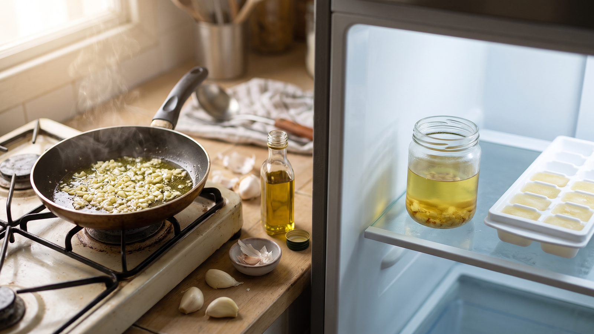

生のにんにくを油に漬けて常温保存しない｜酸素が少ない環境とボツリヌス菌
ガラス瓶に生のにんにくとオリーブオイルを入れて、キッチンの棚に並べておく。手軽に使えるおしゃれな作り置きとして試したくなりますが、「台所にそのまま置きっぱなしにして大丈夫なのかな？」と疑問に思う方も多いのではないでしょうか。
結論から言うと、生のにんにくを油に漬けて常温で置いてはいけません。
にんにくを油に沈めると、油の膜が空気を遮断して酸素がほとんどない状態になります。この「酸素が極めて少ない油の中」と「常温の台所」がそろうと、土の中に広くいるボツリヌス菌が増えて毒素を作りやすくなります。
ボツリヌス菌は普段、熱にとても強い頑丈な殻に包まれて土や泥の中に潜んでいます。この殻は120℃で4分以上加熱しないと壊れないため、家庭での煮炊きや炒め物程度の熱では死にません（東京都保健医療局）。土から収穫されるにんにくについた菌を完全に取り除くのは難しく（町田市保健所）、生のにんにくから菌が見つかった例もあります。
酸味が少ないにんにくを油で密封して常温に置くと、殻から出た菌が増えて強力な毒素を作ることがあります。この毒素は、ものが二重に見えたり手足に力が入らなくなったりする食中毒の原因になります（町田市保健所）。油に漬けた刻みにんにくでは、室温で毒素ができても見た目やにおいが普段と変わらなかった例があり、においや色では見分けられないことがあります。
家庭で加熱調理したにんにくオイルでも、熱に強い殻そのものは残ると考えられるため、生のまま漬けたものと同じように注意が必要です。家庭の作り方では菌の増殖や毒素の生成を防ぎきれないため（食品安全委員会・ドイツ連邦リスク評価研究所の注意喚起紹介）、常温には置かず、少量を作ってその日のうちに使うか、残りは冷蔵や冷凍で保存するのが基本となります（オレゴン州立大学の家庭向け案内）。
家庭で楽しむにんにくオイルの作り方と保存手順
料理1回分をフライパンで手軽に作り、残ったらすぐに冷やして管理する手順です。
材料（2人分の炒め物やパスタ1回分）
* にんにく：2片 * オリーブオイル：大さじ4
手順
- にんにくの皮をむいてみじん切りにし、冷たいフライパンにオリーブオイルと一緒に入れます。
- 弱火にかけ、2〜3分ほど温めます。にんにくが薄いきつね色になったら火を止め、その日の料理に使います。
- 余ったら冷めるのを待ち、洗ってしっかり乾かしたふた付きのびんに移します。容器に作った日を書いて貼り、すぐに冷蔵庫へ入れます。4日以内に使い切ってください（オレゴン州立大学）。
- まとめて作り置きしたいときは、製氷皿に小分けして冷凍します。固まったら密閉袋へ移して冷凍庫で保存します。
- もし冷蔵庫に入れ忘れて常温の台所に置いたままにしてしまったもの、容器がふくらんでいるもの、においがおかしいものは、絶対に味見をせずに捨ててください（東京都保健医療局）。
別の日常場面への応用
酸素の少ない環境で菌を増やさないという考え方は、ほかの自家製保存食にもそのまま当てはまります。ハーブやきのこ、ドライトマトを油に漬ける場合も、常温の棚には置かず、冷蔵庫に入れて4日以内に使い切るか、製氷皿などで小分けにして冷凍します（オレゴン州立大学）。また、自家製の食品を密封した場合も食中毒のリスクがあるため、冷蔵保管して早めに食べることが大切です（大阪市）。家庭で作るびん詰や真空パックは、3℃未満で冷蔵するか−18℃以下で冷凍して保存してください（東京都保健医療局）。市販のオイルやびん詰でも、ラベルに「要冷蔵」や「10℃以下で保存」と書かれているものは必ず冷蔵庫に入れ、表示された期限内に使い切ります（東京都保健医療局）。
まとめ
生のにんにくを油に漬けて常温で置くと、酸素がない環境を好むボツリヌス菌が増える原因になります。にんにくオイルは使う分だけフライパンで少量作るか、残ったら容器に日付を書いて冷蔵庫に入れ、4日以内に使い切りましょう。長く持たせたいときは製氷皿で小分けにして冷凍し、常温の棚には決して置きっぱなしにしないことが大切です。
参考資料
* 東京都保健医療局「食品衛生の窓」ボツリヌス菌 * 大阪市「ボツリヌス食中毒対策について」 * 町田市保健所「ボツリヌス食中毒に注意」 * オレゴン州立大学エクステンション「Herbs and vegetables in oil」（米国の大学の家庭向け案内） * 食品安全委員会「ドイツ連邦リスク評価研究所(BfR)、自家製のハーブオイル及び野菜のオイル漬け（マリネ）によるボツリヌス菌の健康リスクについて注意喚起」